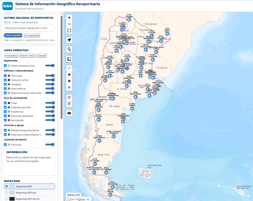
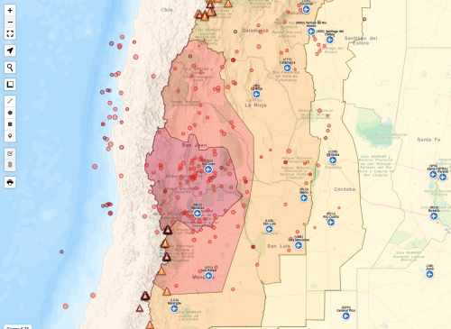
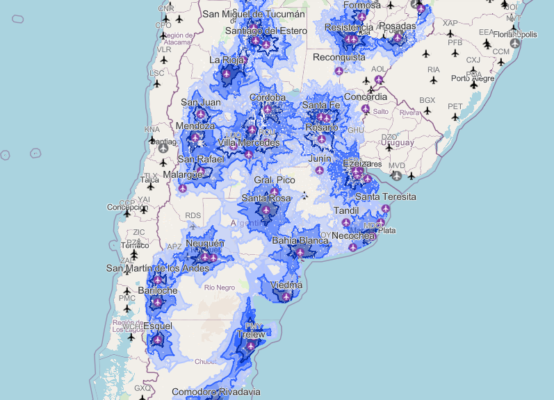
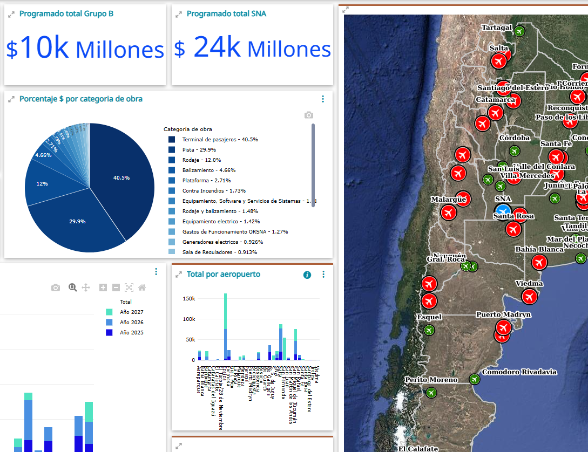

SNA
Sistema de Información Geográfica Aeroportuaria SIGA
Visor geográfico del Sistema Nacional de Aeropuertos con información territorial, infraestructura aeroportuaria y capas de análisis.
Abrir SIGAVisualizadores y dashboards geográficos del SNA

Visor geográfico del Sistema Nacional de Aeropuertos con información territorial, infraestructura aeroportuaria y capas de análisis.
Abrir SIGA
Mapa interactivo de aeropuertos del Sistema Nacional de Aeropuertos en relación con la zonificación sísmica y los sismos registrados.
Abrir mapa
Accesibilidad territorial por distancia y tiempo desde cada aeropuerto.
Abrir
Dashboard de inversiones y programación financiera del SNA.
Abrir